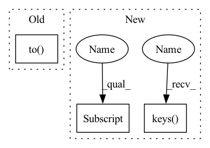

Pattern ID :14330
Before Change
if transform_pred:
pred = transform(pred)
y = transform(y)
pred = pred.to( torch.float32)
y = y.to(torch.float32)
error = (pred - y) ** 2 // [N, T, 3, H, W]
After Change
torch.sqrt(torch.mean(error[:, i] * w_lat, dim=(-2, -1)))
)
loss_dict["w_rmse"] = np.mean([loss_dict[k] .cpu() for k in loss_dict.keys() ])
return loss_dict
In pattern: SUPERPATTERN
Frequency: 3
Non-data size: 3
Instances Fragment ID: 47420147
Project Name: aditya-grover/climate-learn
Commit Name: f2eaf94e3b70bb303f4290772bfee2a42c469038
Time: 2023-02-16
Author: ductungnguyen1997@gmail.com
File Name: src/climate_learn/models/modules/utils/metrics.py
M Class Name: AnonimousClass
N Class Name: AnonimousClass
M Method Name: lat_weighted_rmse(8)
N Method Name: lat_weighted_rmse(11)
M Parent Class:
N Parent Class:
M File Name: src/climate_learn/models/modules/utils/metrics.py
N File Name: src/climate_learn/models/modules/utils/metrics.py
M Start Line: 133
M End Line: 175
N Start Line: 82
N End Line: 113
Before Change
def _mp_fn(index, opt):
device = xm.xla_device()
WRAPPED_MODEL.to( device)
WORLD_SIZE = xm.xrt_world_size()
RANK = xm.get_ordinal()
After Change
with open(opt.hyp) as f:
hyp = yaml.safe_load(f) // load hyps dict
data_dict = check_dataset(opt.data)
num_coords = data_dict["num_coords"] if "num_coords" in data_dict.keys() else 0
nc = int(data_dict["nc"]) // number of classes
model = Model("models/yolov5s.yaml", ch=3, nc=nc, anchors=hyp.get("anchors"), num_coords=num_coords).to(device) Fragment ID: 47420145
Project Name: wmcnally/kapao
Commit Name: 1018ab4edb5524113273902f7fee44b87dbacba9
Time: 2021-10-13
Author: wmcnally@uwaterloo.ca
File Name: xla_tests/train_step.py
M Class Name: AnonimousClass
N Class Name: AnonimousClass
M Method Name: _mp_fn(2)
N Method Name: _mp_fn(2)
M Parent Class:
N Parent Class:
M File Name: xla_tests/train_step.py
N File Name: xla_tests/train_step.py
M Start Line: 33
M End Line: 60
N Start Line: 33
N End Line: 68
Before Change
pred = transform(pred)
y = transform(y)
pred = pred.to(torch.float32)
y = y.to( torch.float32)
// lattitude weights
w_lat = np.cos(np.deg2rad(lat))
w_lat = w_lat / w_lat.mean() // (H, )After Change
clim = clim.to(device=y.device).unsqueeze(0)
pred = pred - clim
y = y - clim
loss_dict = {}
with torch.no_grad():
for i, var in enumerate(vars):
pred_prime = pred[:, i] - torch.mean(pred[:, i])
y_prime = y[:, i] - torch.mean(y[:, i])
loss_dict[f"acc_{var}_{log_postfix}"] = torch.sum(
w_lat * pred_prime * y_prime
) / torch.sqrt(
torch.sum(w_lat * pred_prime**2) * torch.sum(w_lat * y_prime**2)
)
loss_dict["acc"] = np.mean([loss_dict[k] .cpu() for k in loss_dict.keys() ])
return loss_dict
Fragment ID: 47420150
Project Name: aditya-grover/climate-learn
Commit Name: f2eaf94e3b70bb303f4290772bfee2a42c469038
Time: 2023-02-16
Author: ductungnguyen1997@gmail.com
File Name: src/climate_learn/models/modules/utils/metrics.py
M Class Name: AnonimousClass
N Class Name: AnonimousClass
M Method Name: lat_weighted_acc(7)
N Method Name: lat_weighted_acc(11)
M Parent Class:
N Parent Class:
M File Name: src/climate_learn/models/modules/utils/metrics.py
N File Name: src/climate_learn/models/modules/utils/metrics.py
M Start Line: 179
M End Line: 231
N Start Line: 118
N End Line: 155
Before Change
pred = transform(pred)
y = transform(y)
pred = pred.to(torch.float32)
y = y.to( torch.float32)
error = (pred - y) ** 2 // [N, T, 3, H, W]
// lattitude weightsAfter Change
.to(dtype=error.dtype, device=error.device)
)
loss_dict = {}
with torch.no_grad():
for i, var in enumerate(vars):
loss_dict[f"w_rmse_{var}_{log_postfix}"] = torch.mean(
torch.sqrt(torch.mean(error[:, i] * w_lat, dim=(-2, -1)))
)
loss_dict["w_rmse"] = np.mean([loss_dict[k] .cpu() for k in loss_dict.keys() ])
return loss_dict
Fragment ID: 47420157
Project Name: aditya-grover/climate-learn
Commit Name: f2eaf94e3b70bb303f4290772bfee2a42c469038
Time: 2023-02-16
Author: ductungnguyen1997@gmail.com
File Name: src/climate_learn/models/modules/utils/metrics.py
M Class Name: AnonimousClass
N Class Name: AnonimousClass
M Method Name: lat_weighted_rmse(8)
N Method Name: lat_weighted_rmse(11)
M Parent Class:
N Parent Class:
M File Name: src/climate_learn/models/modules/utils/metrics.py
N File Name: src/climate_learn/models/modules/utils/metrics.py
M Start Line: 133
M End Line: 175
N Start Line: 82
N End Line: 113